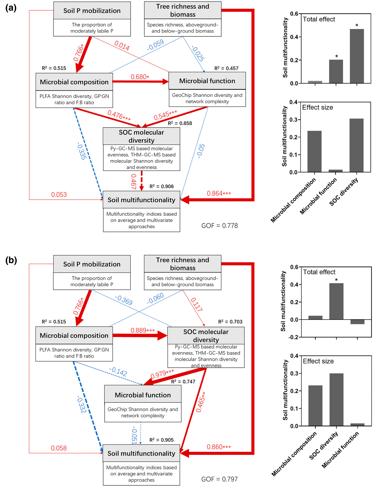
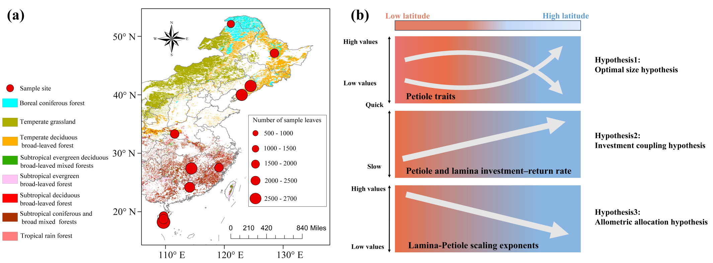

01
1st Author D. F. Petticord, E. H. Boughton, A. Gough, J. Qiu, A. L. Reyes, A. Saha, R. Zhi, J. P. Sparks, "Phosphorus mitigation through hay harvest: Addressing legacy P in subtropical pasture"

27 peer-reviewed publications across plant–soil ecology, biogeochemistry, and tropical forest dynamics. Selected work shown below. * denotes co-first author.





